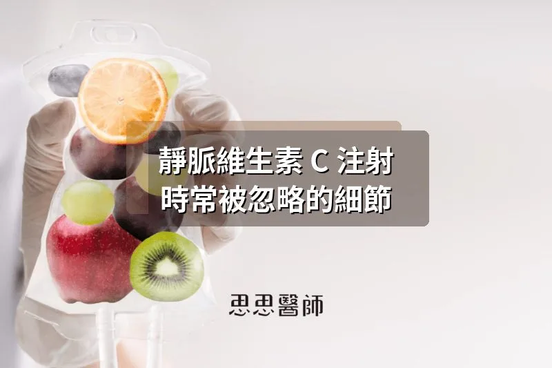
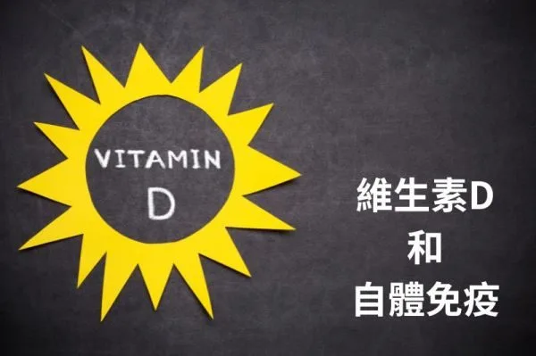

靜脈維生素 C 注射時常被忽略的細節

美國化學家 Linus Pauling 一生獲得兩次諾貝爾獎，1954 年的化學獎和 1962 年的和平獎，是歷史上極少數能夠單獨拿到兩個諾貝爾獎的人之一。70 歲之後，他開始和蘇格蘭外科醫師 Ewan Cameron 合作，研究高劑量維他命 C 對末期癌症病人的影響。兩人在 1976 年和 1978 年各發表了一篇 PNAS 論文，讓 100 名末期癌症病人每天接受 10 克維他命 C（初期靜脈注射，後期轉為口服），這批病人的存活中位數是對照組的 4.2 倍，210 天對上 50 天。
然後 Mayo Clinic 來了。1979 年和 1985 年，Charles Moertel 帶領的團隊在《新英格蘭醫學期刊》發表了兩篇隨機對照試驗，結論是：維他命 C 對癌症病人沒有幫助。Pauling 的聲譽被完全摧毀，主流醫學界從此把高劑量維他命 C 療法打入冷宮。他在 1994 年去世，享年 93 歲。這個故事的轉折，要等到 28 年後才出現。
Mayo Clinic 不是在重做同一個實驗
2004 年，美國國立衛生研究院（NIH）的 Sebastian Padayatty 和 Mark Levine 在《內科醫學年鑑》發表了一篇藥物動力學研究，揭開了一件在當時沒有人意識到的事：Cameron 的病人接受的是靜脈注射，Mayo Clinic 的試驗從頭到尾都是口服。而這兩種給藥方式，在生理上根本不是同一件事。
人體腸道的 SVCT1 轉運蛋白（sodium-dependent vitamin C transporter 1）讓血漿維他命 C 濃度有一道無法突破的上限，大約是 70-80 μmol/L。靜脈注射完全繞過這個限制，IVC（intravenous vitamin C）可以讓血漿濃度達到 10-30 mmol/L，是口服上限的 60-100 倍。Mayo Clinic 用了一個根本無法達到治療濃度的給藥方式，然後宣布「維他命 C 無效」。Pauling 沒有錯，只是兩個試驗測試的從來就不是同一件事。
IVC 的作用機轉，和「補充維他命 C」完全相反
IVC 發揮的不是我們平常說的抗氧化作用。NIH 的 Chen 等人在 2005 年和 2008 年的 PNAS 論文中確認：在毫摩爾（millimolar）濃度下，抗壞血酸會在腫瘤微環境的細胞外液催化產生過氧化氫（H₂O₂），這是一種促氧化（pro-oxidant）作用。正常細胞有完整的過氧化氫酶（catalase）和麩胱甘肽過氧化酶（GPX）系統，可以迅速把 H₂O₂ 分解掉；很多癌細胞的過氧化氫酶系統功能低下，H₂O₂ 滲入後無法中和，導致氧化性死亡。選擇性毒殺癌細胞，是 IVC 最核心的機轉依據。
2024 年，美國愛荷華大學針對第四期轉移性胰臟癌發表了隨機對照試驗。這個在臨床上幾乎是宣判死刑的診斷，標準化療的存活中位數大約 8 個月。加入 IVC 的組別，存活中位數延長至 16 個月。試驗因效果過強提前終止，繼續讓對照組不接受 IVC 已經不符合倫理要求。
幾個在臨床上常被忽略的細節
在我的門診執行 IVC 療程的過程中，我注意到有幾個環節是文獻中提到、但在實務上容易被輕忽的。
第一個是銅的狀態。Ascorbic acid 是強效的還原劑，會把 Cu²⁺ 還原成 Cu⁺，直接影響銅藍蛋白（ceruloplasmin）的鐵氧化酶（ferroxidase）活性。這個功能的任務是把 Fe²⁺ 氧化回 Fe³⁺，讓鐵能夠安全儲存在鐵蛋白裡，不在血液中自由漂浮。口服研究中已記錄到 ceruloplasmin 功能活性平均下降 21%（Fischer et al. 1984）；IVC 的血漿濃度比口服高出 60-100 倍，理論上影響更大。在臨床上比較可行的做法，是在 IVC 療程期間確保飲食中有足夠的銅攝取，富含銅的食物包括牡蠣、腰果、黑芝麻、可可和動物肝臟。對於密集進行長期 IVC 療程的病人，可以考慮在非 IVC 的日子補充少量銅（0.5-1 mg/天）。有一個很重要的禁忌：銅和 IVC 絕不能同天給。2023 年 Saito 等人的動物研究確認，同時給予維他命 C 和銅，兩者之間的氧化還原循環會製造系統性氧化壓力，造成蛋白質氧化和腎臟損傷。如果出現不明原因的疲勞、對鐵劑沒有反應的貧血，或手腳麻木感，這些都可能是銅攝取不足的臨床訊號，值得留意。
第二個是麩胱甘肽（glutathione）的給藥時間。IVC 製造的 H₂O₂ 在被細胞中和的過程中需要消耗麩胱甘肽。2011 年 Chen 等人在《Free Radical Biology & Medicine》的研究確認，IV 麩胱甘肽會直接拮抗 IVC 的抗癌效果，效果衰減幅度可達 10-95%。對於癌症患者，IVC 和靜脈麩胱甘肽之間必須間隔至少 24 小時，絕不能同天給。如果當天必須同時安排，先給 GSH 再給 IVC，因為 IVC 的血漿半衰期更長。非癌症患者（免疫支援、慢性疲勞等）的規則相對寬鬆，但同時點滴仍應避免。
第三個是IVC 前的鐵儲存篩查。IVC 的 ascorbic acid 會把 Fe³⁺ 還原成 Fe²⁺，把鐵從鐵蛋白裡動員出來，增加游離 Fe²⁺。正常鐵儲存的人影響有限，但鐵儲存異常高的人，游離 Fe²⁺ 加上 IVC 生成的 H₂O₂，會透過 Fenton 反應大量產生毒性最強的氫氧自由基（•OH）。做 IVC 前需要確認：鐵蛋白 >500 ng/mL 需要謹慎評估，>1000 ng/mL 屬於高度風險；轉鐵蛋白飽和度（transferrin saturation）>45-55% 要提高警覺；遺傳性血色素沉著症（hemochromatosis）是 IVC 的絕對禁忌。篩查鐵儲存狀況的目的是排除鐵過載的人，而不是確認鐵夠不夠。
第四個是 G6PD 缺乏症（蠶豆症）的篩查。G6PD（葡萄糖-6-磷酸去氫酶，glucose-6-phosphate dehydrogenase）是紅血球對抗氧化壓力的關鍵酵素。缺乏 G6PD 的人，紅血球在面對 IVC 製造的 H₂O₂ 時無法保護自己，可能發生急性溶血，嚴重時危及生命。這是 IVC 最重要的絕對禁忌，每位病人在第一次 IVC 前都必須完成 G6PD 篩查，沒有例外。
第五個是點滴配方中的鎂和鈣。IVC 溶液的酸性和滲透壓可能造成靜脈刺激和痙攣，高劑量 IVC 也可能在滴注過程中引發短暫的低血鈣症狀（手足抽搐、口周麻木）。Riordan protocol（目前最廣泛引用的 IVC 臨床指引）要求每袋都加入至少 200 mg 的鎂來預防靜脈痙攣，50 g 以上的劑量另外加葡萄糖酸鈣。這不是在補充被消耗的鈣鎂，而是預防滴注過程中的急性反應。
最後一個是硒（selenium）在長期療程中的考量。2022 年 Schoenfeld 的研究發現，GPX1 和 thioredoxin reductase 這兩個依賴硒的酵素，是正常細胞應對 IVC 製造之 H₂O₂ 的主要防禦機制。頻繁接受 IVC 的病人，長期下來硒依賴酵素的消耗理論上存在。但這個問題在癌症患者上有個反轉：補充硒可能增強癌細胞的 H₂O₂ 防禦能力，削弱 IVC 的治療效果，所以癌症患者在 IVC 療程期間不應主動補硒。
高劑量 IVC 的臨床效果已經不只是功能醫學的邊緣話題，2024 年的胰臟癌 RCT 資料讓它開始進入嚴肅的腫瘤科討論。但它的安全性細節，需要比「補充維他命 C」這個概念嚴謹得多的事前篩查和療程管理。Pauling 等了 28 年才被平反，那些沒有做好篩查就進行 IVC 的病人，等不起。
參考資料
1. Cameron E, Pauling L. Supplemental ascorbate in the supportive treatment of cancer. PNAS. 1976;73(10):3685-3689. https://pubmed.ncbi.nlm.nih.gov/1068480/
2. Creagan ET, Moertel CG, et al. Failure of high-dose vitamin C therapy to benefit patients with advanced cancer. N Engl J Med. 1979;301(13):687-690. https://pubmed.ncbi.nlm.nih.gov/384241/
3. Moertel CG, Fleming TR, et al. High-dose vitamin C versus placebo in patients with advanced cancer. N Engl J Med. 1985;312(3):137-141. https://pubmed.ncbi.nlm.nih.gov/3880867/
4. Padayatty SJ, Sun H, Wang Y, Levine M, et al. Vitamin C pharmacokinetics: implications for oral and intravenous use. Ann Intern Med. 2004;140(7):533-537. https://pubmed.ncbi.nlm.nih.gov/15068981/
5. Chen Q, Espey MG, et al. Pharmacologic ascorbic acid concentrations selectively kill cancer cells. PNAS. 2005;102(38):13604-13609. https://pubmed.ncbi.nlm.nih.gov/16157892/
6. Chen Q, Espey MG, et al. Pharmacologic doses of ascorbate act as a prooxidant and decrease growth of aggressive tumor xenografts in mice. PNAS. 2008;105(32):11105-11109. https://pmc.ncbi.nlm.nih.gov/articles/PMC2516281/
7. Bodeker KL, et al. A randomized trial of pharmacological ascorbate, gemcitabine, and nab-paclitaxel for metastatic pancreatic cancer. Redox Biology. 2024. https://pubmed.ncbi.nlm.nih.gov/39369582/
8. Chen Q, et al. Glutathione-dependent reductions in pharmacologic ascorbate cytotoxicity. Free Radic Biol Med. 2011. https://www.sciencedirect.com/science/article/abs/pii/S0891584911003479
9. Fischer PW, et al. Effect of ascorbic acid supplementation on ceruloplasmin and iron status. J Nutr. 1984. https://pubmed.ncbi.nlm.nih.gov/3694287/
10. Finley EB, Cerklewski FL. Influence of ascorbic acid supplementation on copper status. Am J Clin Nutr. 1983. https://pubmed.ncbi.nlm.nih.gov/6837490/
11. Gutteridge JM. Inhibition of the Fenton reaction by ceruloplasmin and the ascorbate-copper interaction. Biochem J. 1991. https://pubmed.ncbi.nlm.nih.gov/1717196/
（本文由我規劃架構與觀點，並協同 AI 校正與潤飾語句）
 空腹小雞跟思思醫師一起斷食，順便養一隻小雞來養小雞 →
空腹小雞跟思思醫師一起斷食，順便養一隻小雞來養小雞 →
好朋友週信
每週五一封：《健康駭客週報》這集的研究重點，加上家醫專欄這週的新文章。免費，隨時可以退訂。
延伸閱讀

維生素D與自體免疫疾病
維生素D活性形式透過維生素D受體調控基因表達，減少促炎細胞因子、增加抗炎細胞因子，對多發性硬化症、第一型糖尿病和紅斑狼瘡有幫助。

補充維他命 C，是不是天然的效果一樣嗎？
1050毫克卡姆果原汁降低發炎指標但同量維他命C純錠無效，食物基質內生物類黃酮發揮獨立作用，口服上限受SVCT1蛋白質飽和限制約200–400毫克。
間歇性斷食改善老年輕度認知障礙——文獻分享
74歲輕度認知障礙患者執行15:9間歇性斷食12週，蒙特婁認知評估改善1.7分且體重無差異，配合度達87%，但長期效果仍需更大規模研究支持。